Portfolio de projets personnels
Edgar Chopard
Ce portfolio réunit quatre projets d’ingénierie personnels conçus et réalisés de A à Z : mécanique, électronique embarquée, impression 3D, systèmes embarqués et domotique.
Mes projets

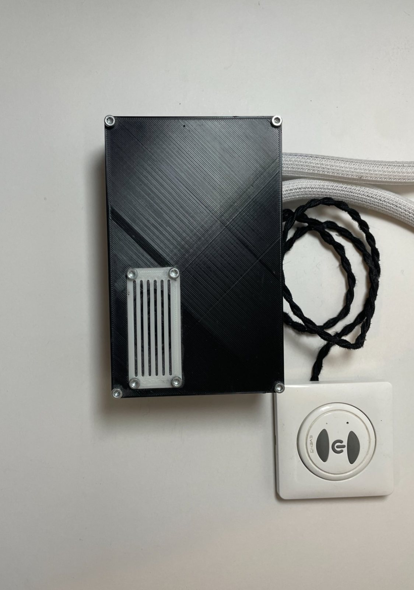
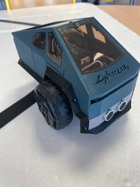

Tous les codes sources et fichiers 3D sont disponibles sur mon GitHub : github.com/edgar-chopard ↗
01
Mini Tank RC
Robot télécommandé – 4 roues motrices – Tourelle 2 axes – Canon billes de gel – FPV
Présentation du projet
Concept
Un tank télécommandé conçu et fabriqué intégralement : structure en aluminium, MDF et fibre de carbone assemblée par des pièces imprimées en 3D, 4 roues motrices indépendantes, une tourelle orientable sur 2 axes et un système de tir à billes de gel. Le tout piloté par radio FlySky 2,4 GHz avec retour vidéo FPV 5,8 GHz.
1 / 2
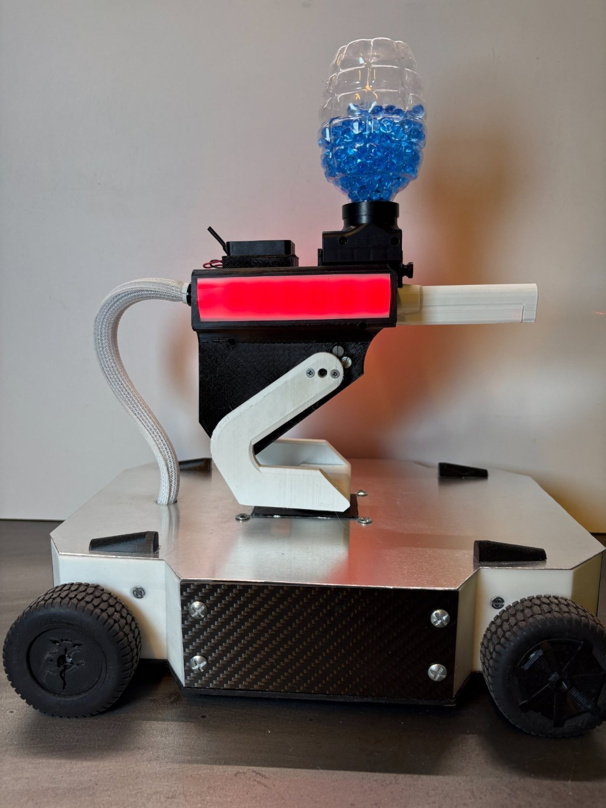
2 / 2Design 3D
Mini Tank RC
Électronique embarquée
Électronique – boîte de commande
Toute l’électronique est logée dans une boîte imprimée en 3D fixée, accessible en un geste par un couvercle à aimants. Le récepteur FlySky FS-iA6 distribue les ordres : les canaux mouvements partent vers l’ESC, les canaux tourelle vers les servos moteurs, les canaux tir et LED vers l’Arduino Nano. Le régulateur LM2596 abaisse la tension de la LiPo 2S à 5V pour les composants logiques.
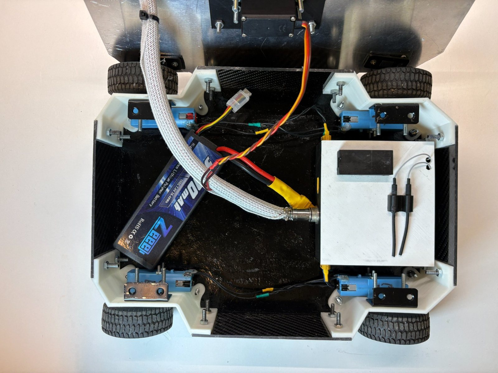
1 / 2 2 / 2
2 / 2
Arduino Nano – logique de tir & LED
L'Arduino Nano gère le système de tir, le laser et les LED RGB. Le récepteur FlySky envoie des signaux PWM sur chaque canal. J'ai dû faire de la rétro-ingénierie pour comprendre la logique du signal PWM reçu par l'Arduino. Puis j’ai mappé chaque canal à une action : tir, laser, couleur des LED. L'Arduino lit le signal du canal dédié, active le relais pour lancer le moteur du canon à billes de gel, allume le laser de visée et change la couleur des LED selon le mode en cours.

Mini Tank RC
Système vidéo & Structure
Système vidéo FPV
J’utilise le même système vidéo FPV 5,8 GHz que sur mes drones FPV : une caméra grand angle fixée sur la tourelle envoie le flux en temps réel vers un écran.
 1 / 2
1 / 2
 2 / 2
2 / 2
Plaques de fibre de carbone
Les panneaux latéraux sont découpés dans des plaques de fibre de carbone vrais : découpe à la Dremel, ajustés à la main, fixés sur les montants imprimés en 3D par des vis inox. En plus de l’aspect tactique, le carbone est léger et rigide.
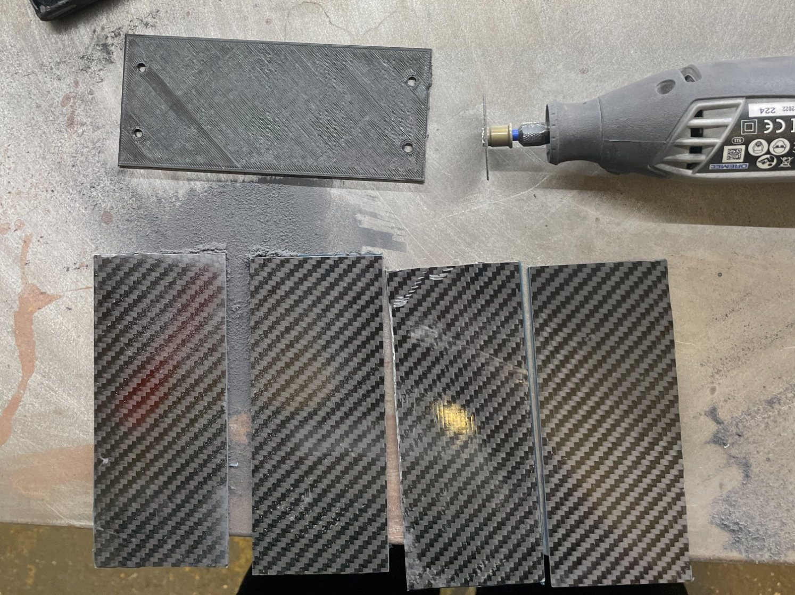
1 / 2 2 / 2
2 / 2
Mini Tank RC
Résultats & Bilan
02
Lit Connecté
Réveil intelligent par détection de présence
Présentation du projet
Contexte
J'ai une alarme sur mon téléphone. Elle me réveille et lève automatiquement le rideau de ma chambre. Si je ne suis pas levé de mon lit au bout de 5 minutes, le système se déclenche : un haut-parleur intégré dans le boîtier joue de la musique et s'arrête dès que je me lève. Impossible de tricher : les capteurs sous les pieds du lit savent exactement si je suis toujours couché.
Lit Connecté
Déroulement d’un réveil
-
1
L’alarme iPhone sonne → le Raccourci Apple envoie la requête HTTP vers l’ESP8266
-
2
L’ESP8266 actionne le relais soudé sur la télécommande du rideau → le rideau se lève
-
3
Décompte de 5 minutes démarre en tâche de fond sur le microcontrôleur
-
4
Levé avant 5 min : les capteurs détectent l’absence de poids → rien ne se passe
-
5
Toujours dans le lit à 5 min : le DFPlayer Mini lance la musique depuis la carte SD
-
6
La musique continue tant que je suis encore couché, s’arrête dès que je me lève
Installation physique
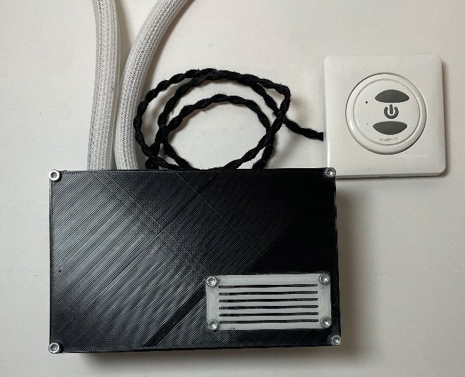
1 / 2 2 / 2
2 / 2
Lit Connecté
Électronique assemblée
PCB : Composants assemblés
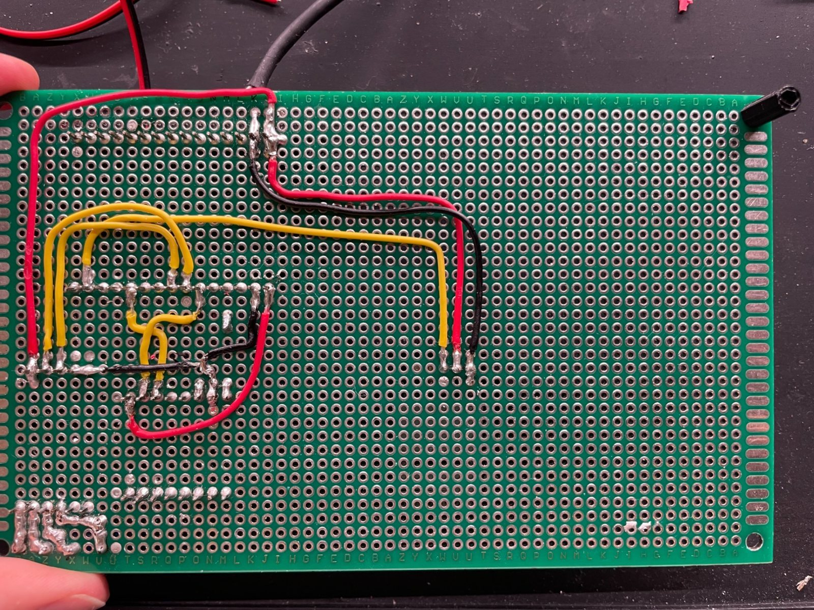
1 / 2 2 / 2
2 / 2
Raccourci Apple & Télécommande rideau
Le Raccourci Apple est configuré une seule fois : dès qu’une alarme se déclenche, il appelle automatiquement l’URL du serveur web de l’ESP8266. Pas d’application tierce, pas de configuration quotidienne. Le rideau est piloté par un relais soudé sur les contacts du bouton de la télécommande, identifiés par rétro-ingénierie.
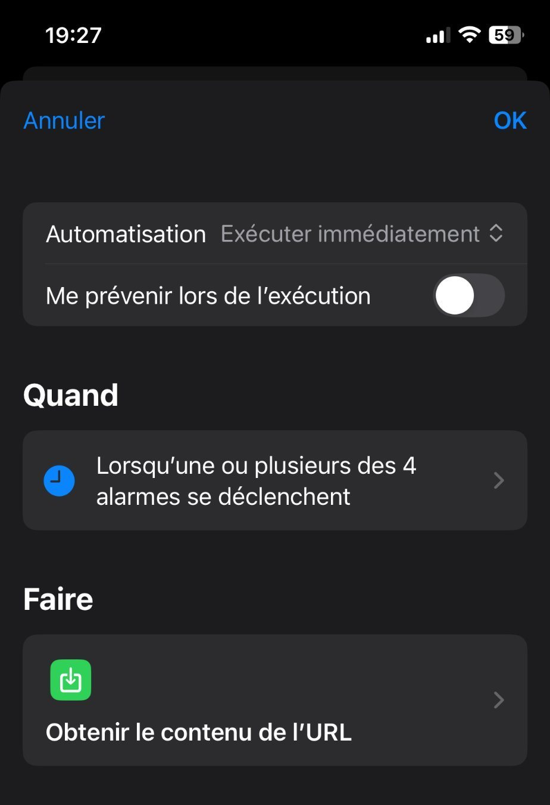
1 / 2 2 / 2
2 / 2
Lit Connecté
Cellules de force & Installation
Le choix du capteur : une décision clé
Le choix du capteur était l'étape la plus critique du projet : un faux négatif et je rate mon réveil, un faux positif et la musique ne tourne pour rien. Le FSR (pastille de pression sous le matelas) était l'option la plus simple, mais sa résistance dérive progressivement et les mouvements pendant le sommeil génèrent trop de bruit. La cellule de force s'est imposée : posée sous chaque pied, elle mesure un poids réel en kilogrammes, indépendamment de l'environnement. C'est invasif à l'installation, mais c'est la seule solution qui ne se trompe jamais.
Cellules de force & supports imprimés 3D
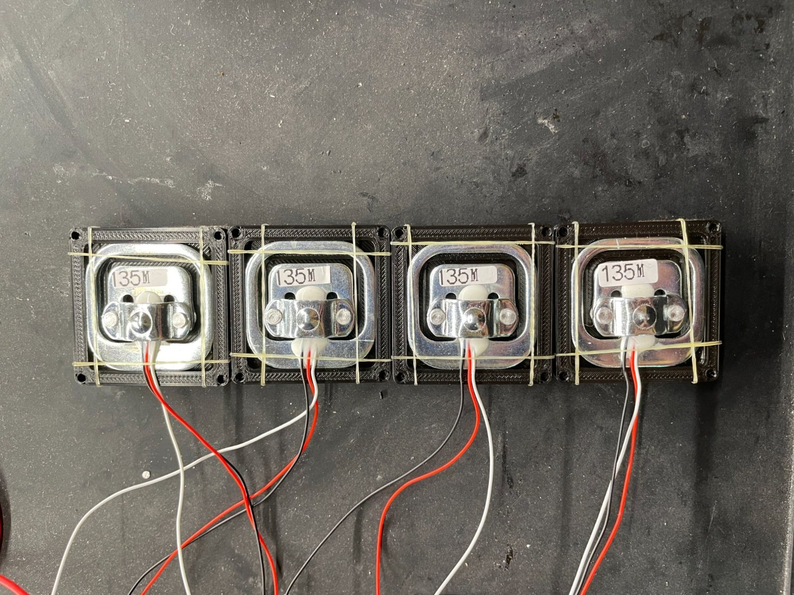
1 / 2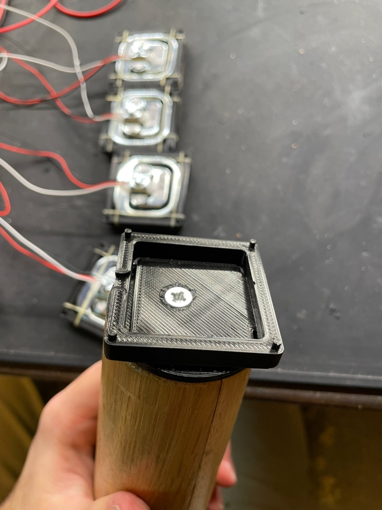
2 / 2Lit Connecté
Résultats & Bilan
03
Cyberline
Robot suiveur de ligne autonome
Présentation du projet
Contexte & Objectif
Le Cyberline est un robot mobile autonome conçu et fabriqué entièrement de A à Z dans le cadre d'un challenge scolaire. Inspiré du design angulaire du Cybertruck de Tesla, il suit de façon autonome une ligne noire sur un parcours balisé par 6 marqueurs, détecte les obstacles et s'arrête avant toute collision en émettant un signal sonore.
Une application Android développée sur MIT App Inventor permet à un utilisateur de sélectionner à distance une porte cible (1 à 6) via Bluetooth : le robot reçoit la commande, commence son suivi de ligne jusqu'au marqueur correspondant, s'immobilise 5 secondes en activant le buzzer, puis reprend automatiquement sa route.
Cyberline
Architecture du système
Le cerveau du robot est un Arduino Uno piloté par un firmware C++ maison. Deux moteurs DC sont commandés par un pont en H L298N. Le suivi de ligne repose sur un capteur Maker Line 5 canaux infrarouge. La détection d'obstacle utilise un capteur ultrasonique HC-SR04. Le tout est alimenté par une batterie NiMH 7.2V et contrôlable via Bluetooth HC-05 depuis une application Android développée sur MIT app inventor.
Vues extérieures - Robot final
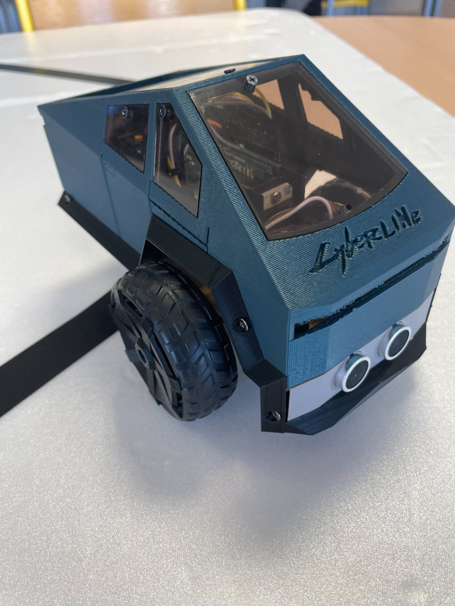
1 / 3 2 / 3
2 / 3
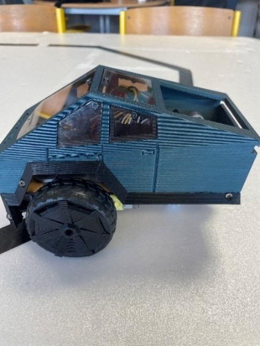
3 / 3Cyberline
Conception CAO sur Fusion 360
Cyberline
Interface applicative
 1 / 2
1 / 2
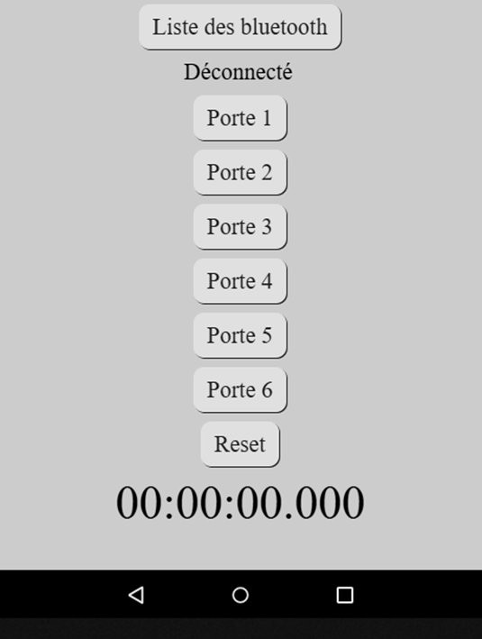
2 / 2Cyberline
Vue d'ensemble du prototype
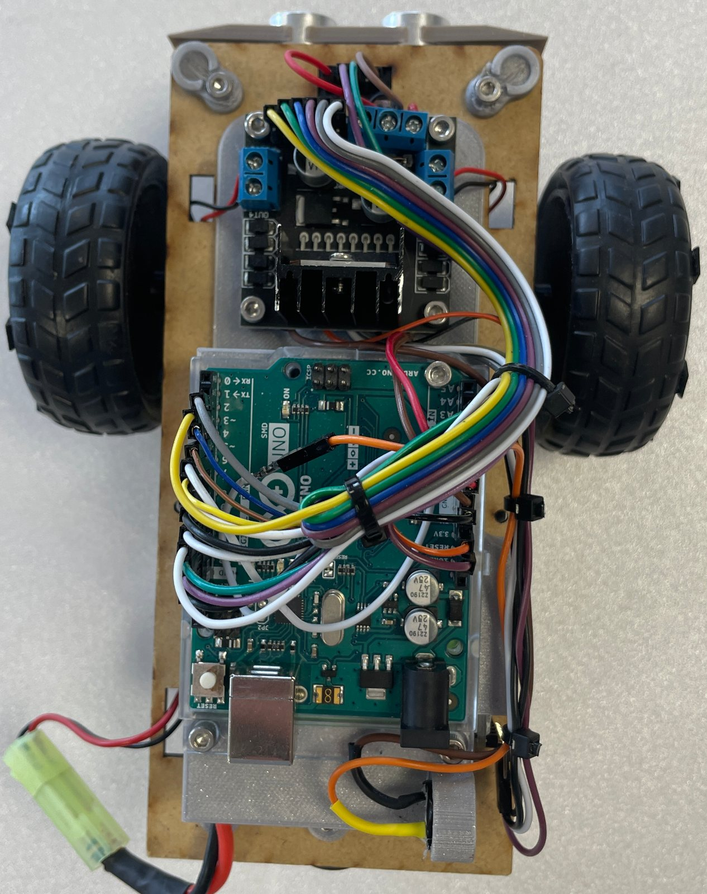
1 / 2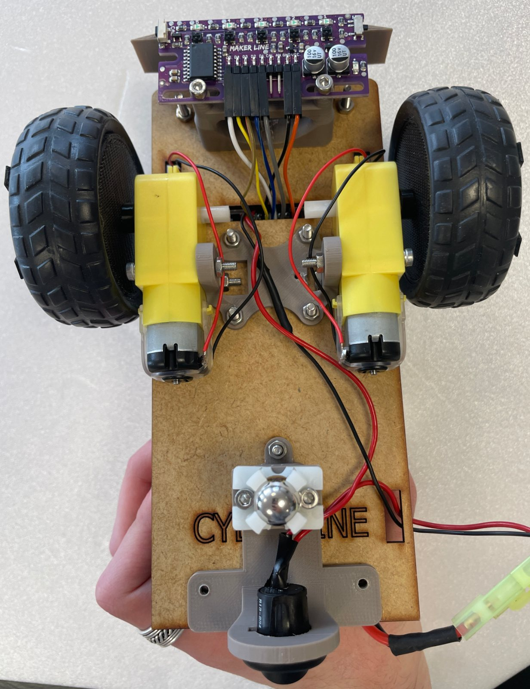
2 / 2Cyberline
Bilan
Compétences mobilisées
Points forts
04
Frigo Connecté
Surveillance des chambres froides en temps réel
Présentation du projet
Contexte
Dans un environnement de restauration, la rupture de la chaîne du froid représente un risque sanitaire et économique majeur. Ce projet répond à un besoin réel : surveiller en continu la température de deux chambres froides (positive et négative) et alerter immédiatement en cas d'anomalie, 24h/24.
Solution développée
Un microcontrôleur ESP8266 (NodeMCU) collecte les mesures de deux sondes DS18B20 toutes les 30 secondes. Les données sont transmises via Wi-Fi à l'application Blynk, accessible depuis n'importe quel smartphone. En cas de dépassement prolongé des seuils configurés, un buzzer local s'active pour alerter le personnel sur place, en complément des notifications push sur téléphone.
Frigo Connecté
Gestion des alertes
Tout fonctionne bien
Perte de Wi-Fi
Capteur(s) déconnecté
Température dépassée
Frigo Connecté
Circuit électronique & Connectique
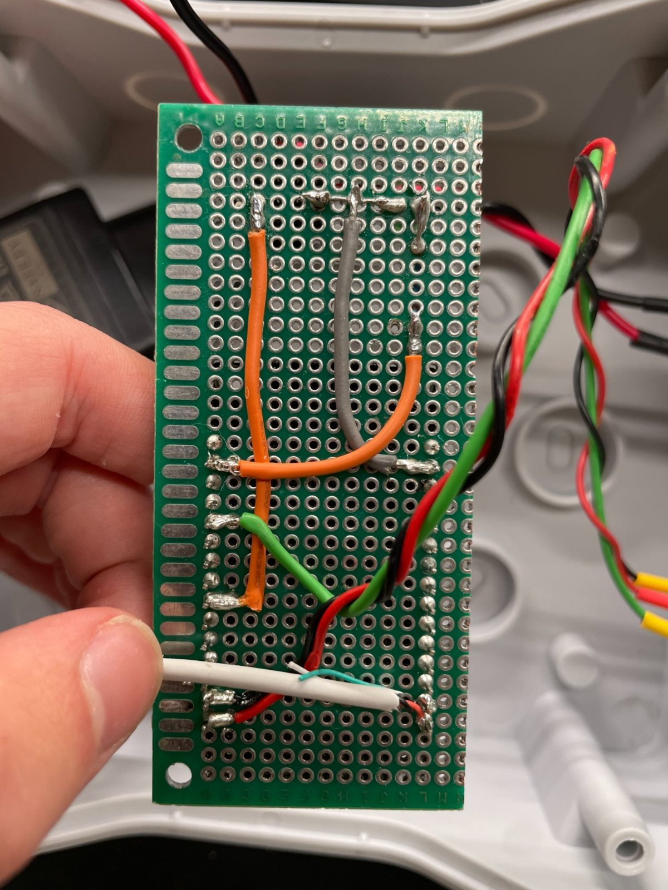
1 / 2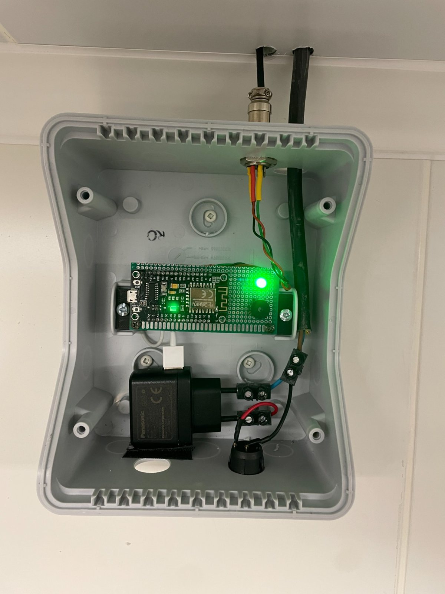
2 / 2Frigo Connecté
Boîtier & Installation
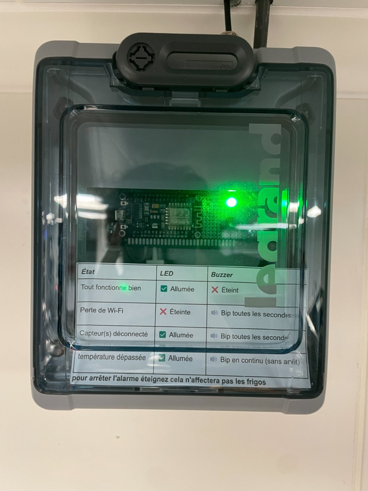
1 / 2 2 / 2
2 / 2
Frigo Connecté
Les sondes de température DS18B20
 1 / 2
1 / 2
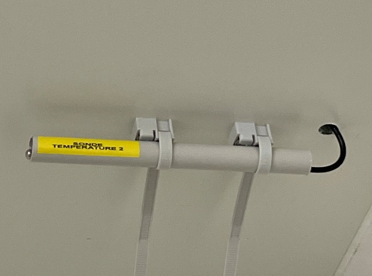
2 / 2Frigo Connecté
Interface applicative
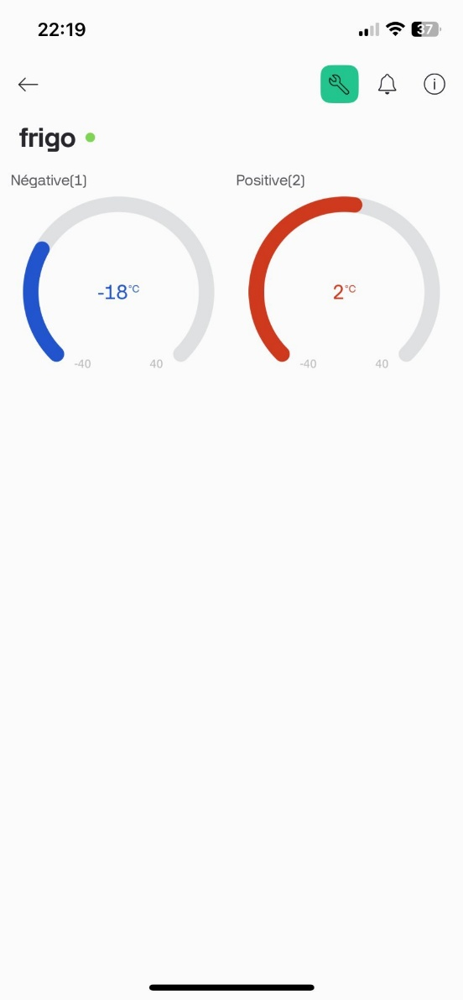
1 / 2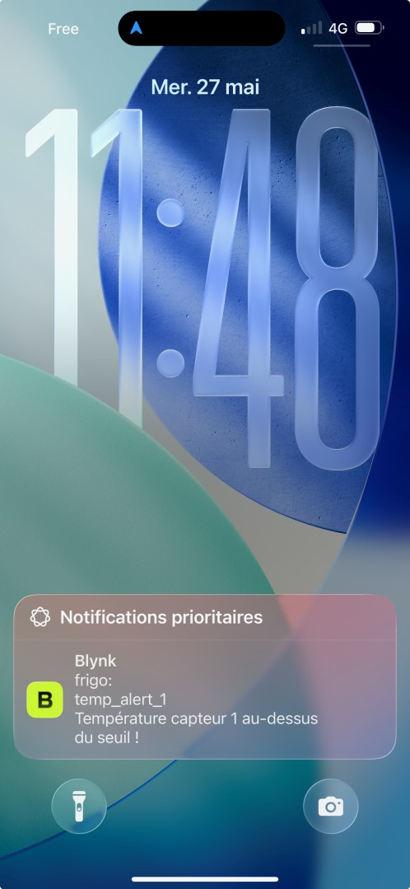
2 / 2Frigo Connecté
Résultats & Bilan
Edgar Chopard